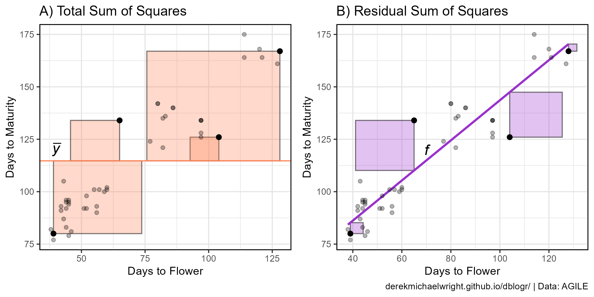
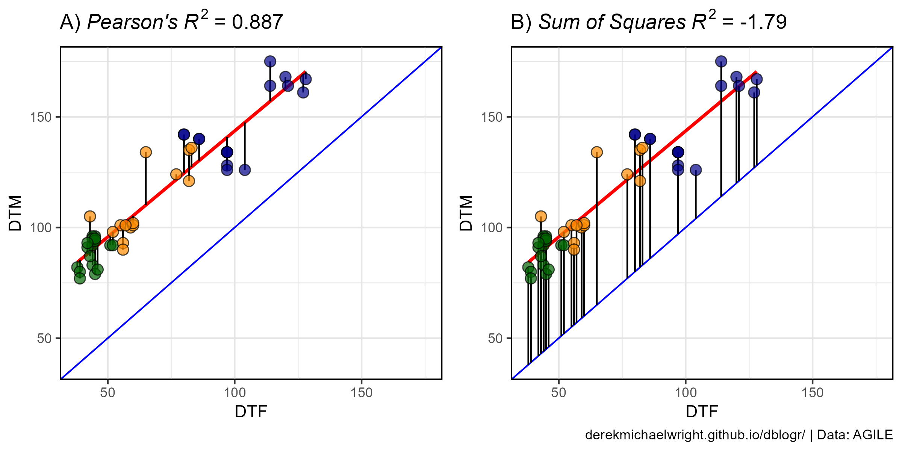
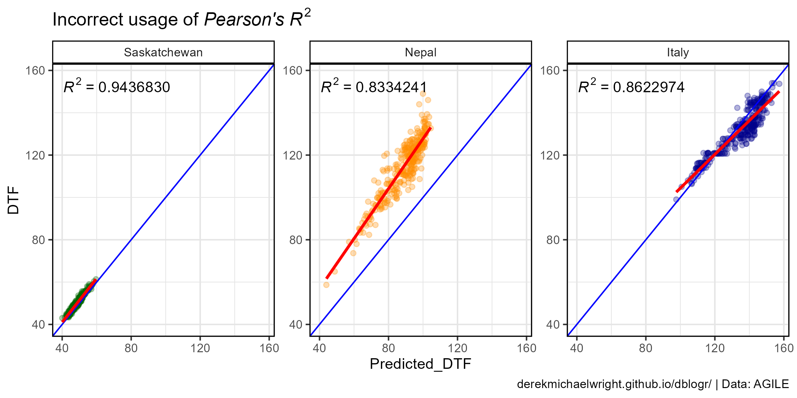
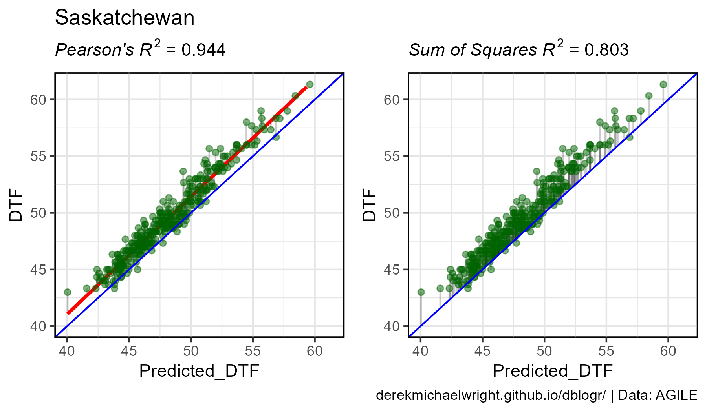
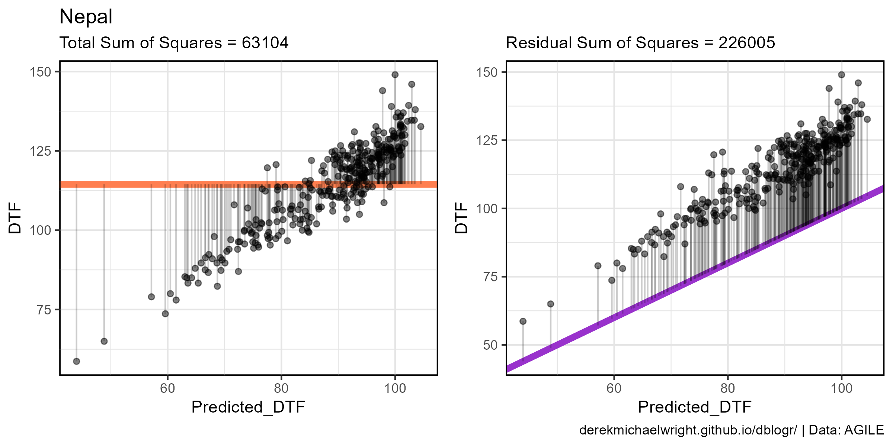
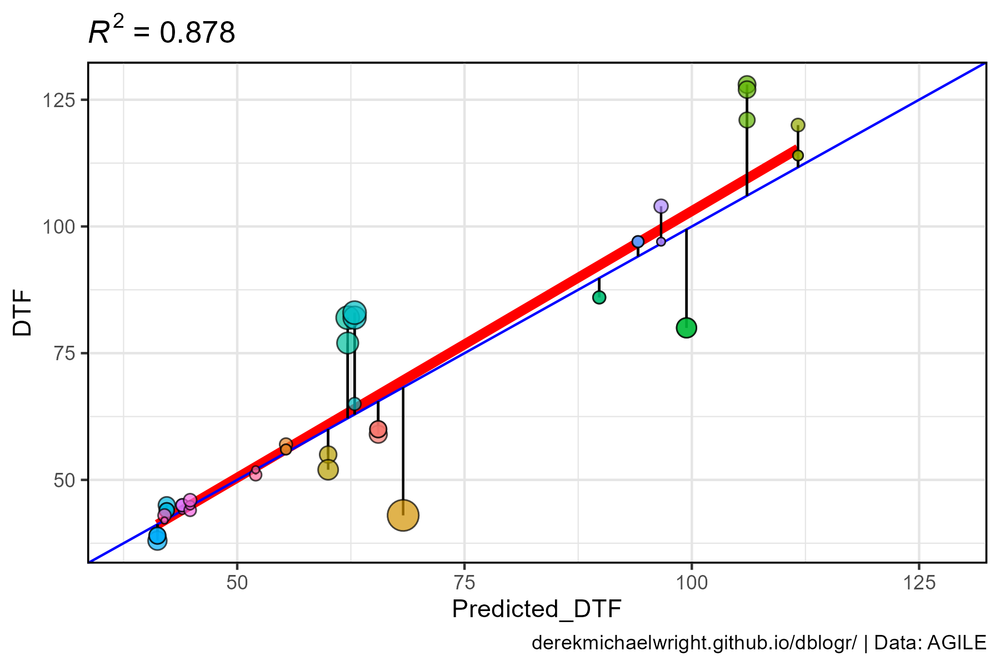
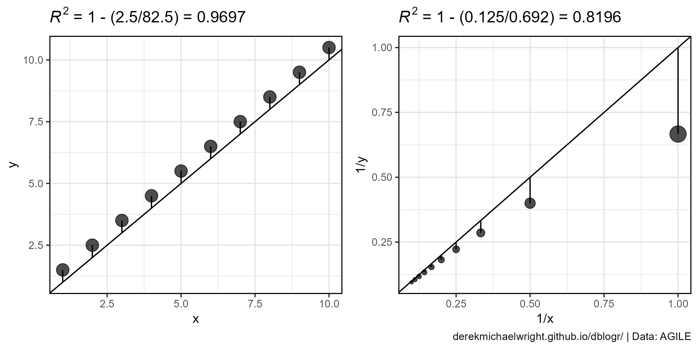
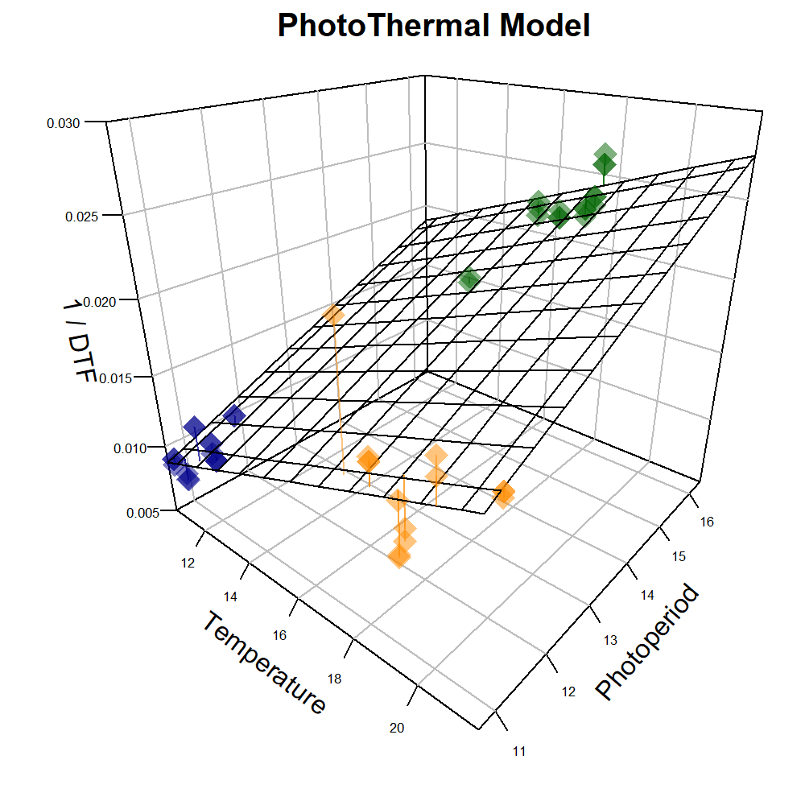

Correlation Coefficients and Predictive Models
A vignette on how to properly use correlation coefficients when evaluating predictive models
Introduction
The correlation coefficient (R2), which indicates the proportion of variation explained by an independent variable or model, can be misused/incorectly used when evaluating predictive models. Depending on the situation, different calculations for R2 can be used to convey different meanings. The goal of this vignette is to help clear up this confusion, with a few different examples.
Prepare Data
# devtools::install_github("derekmichaelwright/agData")
library(agData)
library(readxl) # read_xlsx()
library(ggpmisc) # stat_poly_eq()Dataset 1
Entry: 1 Lentil GenotypeExpt: 18 Site-yearsMacroEnv: 3 MacroenvironmentsRep: 1-3 Reps per site-yearT_mean: Mean temperatureP_mean: Mean photoperiodDTF: Days from sowing to flowerDTM: Days from sowing to swollen podDTM: Days from sowing to maturityRDTF: Rate of progress towards flowering =1 / DTF
Dataset 2
Entry: 324 GenotypesExpt: 3 Site-yearsMacroEnv: 3 MacroenvironmentsDTF: Days from sowing to flowerPredicted_DTF: Predicted values of DTF
# Prep data
d2 <- read_xlsx("data_correlation_coefficients.xlsx", "data_2") %>%
mutate(Expt = factor(Expt, levels = c("Saskatchewan", "Nepal", "Italy")))
# Preview data
DT::datatable(d2)Correlation Between Two Traits
The most obvious correlation is that of two traits. For example,
since DTF, DTS, and DTM are all
phenology traits, we can assume they will be highly correlated. Lets
plot this out and see how it looks.

Interpretations:
- 88.3% of variation in
DTSis explained byDTF. - 92.7% of variation in
DTMis explained byDTS. - 88.7% of variation in
DTMis explained byDTF.
# Prep data
myCaption <- "www.dblogr.com/ or derekmichaelwright.github.io/dblogr/ | Data: AGILE"
myColors <- c("darkgreen","darkorange","darkblue")
# Remove any rows with missing data
d1 <- d1 %>% filter(!is.na(DTF), !is.na(DTS), !is.na(DTM))
# DTF - DTS
mp1 <- ggplot(d1, aes(x = DTF, y = DTS)) +
geom_smooth(method = "lm", se = F, color = "red") +
geom_point(aes(fill = MacroEnv), size = 3, pch = 21, alpha = 0.7) +
scale_fill_manual(name = NULL, values = myColors) +
stat_poly_eq(aes(label = ..rr.label..), rr.digits = 3, size = 4,
formula = y ~ x, parse = T, geom = "label_npc") +
theme_agData() +
labs(title = "A) DTF x DTS", x = "Days to Flower", y = "Days to Swollen Pods")
# DTS - DTM
mp2 <- ggplot(d1, aes(x = DTS, y = DTM)) +
geom_smooth(method = "lm", se = F, color = "red") +
geom_point(aes(fill = MacroEnv), size = 3, pch = 21, alpha = 0.7) +
scale_fill_manual(name = NULL, values = myColors) +
stat_poly_eq(aes(label = ..rr.label..), rr.digits = 3, size = 4,
formula = y ~ x, parse = T, geom = "label_npc") +
theme_agData() +
labs(title = "B) DTS x DTM", x = "Days to Swollen Pods", y = "Days to Maturity")
# DTF - DTM
mp3 <- ggplot(d1, aes(x = DTF, y = DTM)) +
geom_smooth(method = "lm", se = F, color = "red") +
geom_point(aes(fill = MacroEnv), size = 3, pch = 21, alpha = 0.7) +
scale_fill_manual(name = NULL, values = myColors) +
stat_poly_eq(aes(label = ..rr.label..), rr.digits = 3, size = 4,
formula = y ~ x, parse = T, geom = "label_npc") +
theme_agData() +
labs(title = "C) DTF x DTM", x = "Days to Flower", y = "Days to Maturity",
caption = myCaption)
# Append and Save
mp <- ggarrange(mp1, mp2, mp3, nrow = 1, align = "h",
common.legend = T, legend = "bottom")
ggsave("correlation_coefficients_01.png", mp, width = 10, height = 4, bg = "white")Calculating R2
Pearson’s R2
R2 can be calculated using the cor
function which has method = "pearson" as the default.
## [1] 0.8833893## [1] 0.9272951## [1] 0.8868398R2 can also be manually calculated using the following formula to calculate Pearson’s r:
\(r=\frac{n\sum xy - (\sum x)(\sum y)}{\sqrt{(n\sum x^2 - (\sum x)^2)(n\sum y^2 - (\sum y)^2)}}\)
where:
- \(x\) = Independant variable
- \(y\) = Dependant Variable
- \(n\) = Number of observations
and
\(R^2=r^2\)
Now lets manually create a function to calculate R2 using Pearson’s r.
pearsonsR2 <- function(x, y) {
n <- length(x)
r_numerator <- n * sum(x*y) - sum(x) * sum(y)
r_denominator <- sqrt((n * sum(x^2) - sum(x)^2) * (n * sum(y^2) - sum(y)^2))
r <- r_numerator / r_denominator
r^2
}
pearsonsR2(x = d1$DTF, y = d1$DTS)## [1] 0.8833893## [1] 0.9272951## [1] 0.8868398Switching the x and y variables gives the
same result.
## [1] 0.8868398## [1] 0.8868398Note that the stat_poly_eq function included the option
formula = y ~ x, which creates a linear regression of the
x and y variables. Our R2
is a measure how how well the DTM data matches the
predictions of DTM based on our DTF data and
linear regression model.
##
## Call:
## lm(formula = DTM ~ DTF, data = d1)
##
## Residuals:
## Min 1Q Median 3Q Max
## -21.443 -6.744 -1.465 5.132 23.879
##
## Coefficients:
## Estimate Std. Error t value Pr(>|t|)
## (Intercept) 47.91678 3.82211 12.54 2.78e-16 ***
## DTF 0.95699 0.05096 18.78 < 2e-16 ***
## ---
## Signif. codes: 0 '***' 0.001 '**' 0.01 '*' 0.05 '.' 0.1 ' ' 1
##
## Residual standard error: 9.601 on 45 degrees of freedom
## Multiple R-squared: 0.8868, Adjusted R-squared: 0.8843
## F-statistic: 352.7 on 1 and 45 DF, p-value: < 2.2e-16## [1] 0.8868398# Get predicted values and residual values from model
d1 <- d1 %>% mutate(Predicted_DTM = predict(myModel),
Residuals_DTM = residuals(myModel) )We can also calculate R2 by replacing
DTF with with the Predicted_DTM values from
our linear regression model.
## [1] 0.8868398Again, switching the x and y variables gives the same result.
## [1] 0.8868398Sum of Squares R2
If you have Observed and Predicted values, R2 can also be calculated using the Sum of Squares formula:
\(R^2=1-\frac{SS_{residuals}}{SS_{total}}=1-\frac{\sum (o-p)^2}{\sum (o-\bar{o})^2}\)
where:
- \(o\) = Observed value
- \(p\) = Predicted value
- \(\bar{o}=\frac{\sum o}{n}\) = Mean of observed values
Now lets manually create a function to calculate R2 using the Sum of Squares.
Create a plot to visualize the Total Sum of Squares and Residual Sum of Squares
# Prep data
xx <- d1 %>% filter(Expt %in% c("Ro17","Ne17","Sp17","It17"), Rep == 2)
# Total Sum of Squares Plot
mp1 <- ggplot(xx, aes(x = DTF, y = DTM)) +
geom_text(x = 40, y = 120, size = 5,
label = expression(italic(bar("y"))), parse = T) +
geom_rect(alpha = 0.3, fill = "coral", color = alpha("black",0.5),
aes(xmin = DTF, xmax = DTF + (mean(d1$DTM, na.rm = T) - DTM),
ymin = DTM, ymax = mean(d1$DTM, na.rm = T))) +
geom_hline(yintercept = mean(d1$DTM, na.rm = T), color = "coral") +
geom_point(size = 2, ) +
geom_point(data = d1,alpha = 0.3) +
theme_agData() +
labs(title = "A) Total Sum of Squares",
y = "Days to Maturity", x = "Days to Flower")
# Residual Sum of Squares Plot
mp2 <- ggplot(xx, aes(x = DTF, y = DTM)) +
geom_text(x = 70, y = 120, size = 5,
label = expression(italic("f")), parse = T) +
geom_rect(alpha = 0.3, fill = "darkorchid", color = alpha("black",0.5),
aes(xmin = DTF, xmax = DTF - Residuals_DTM,
ymin = DTM, ymax = Predicted_DTM)) +
geom_smooth(data = d1, method = "lm", se = F, color = "darkorchid") +
geom_point(size = 2) +
geom_point(data = d1, alpha = 0.3) +
theme_agData() +
labs(title = "B) Residual Sum of Squares",
y = "Days to Maturity", x = "Days to Flower",
caption = myCaption)
# Appened
mp <- ggarrange(mp1, mp2, ncol = 2, align = "h")
ggsave("correlation_coefficients_02.png", mp, width = 8, height = 4)
In this case:
- \(o\) = Observed value =
DTM - \(p\) = Predicted value =
Predicted_DTM - \(\bar{o}\) = Mean of observed
values =
mean(DTM, na.rm = T)
Now lets calculate R2 using the Sum of Squares formula.
## [1] 0.8868398Now, Swaping the x and y variables results
in different values. Why?
## [1] 0.8724006It is important to set DTM as the observed
variable and Predicted_DTM as the predicted
variable. This is becuase with the sum of squares model, our trendline
has a slope = 1 and intercept = 0
(geom_abline), which is matched by
lm(DTM~Predicted_DTM) but not
lm(Predicted_DTM~DTM).
## (Intercept) Predicted_DTM
## 0 1## (Intercept) DTM
## 12.980 0.887This can be visualized by showing how the trendline
(geom_smooth(method = "lm")) devaites from the 1:1 line
(geom_abline()).
mymin <- min(c(d1$DTM, d1$Predicted_DTM))
mymax <- max(c(d1$DTM, d1$Predicted_DTM))
mp1 <- ggplot(d1, aes(y = DTM, x = Predicted_DTM)) +
geom_smooth(method = "lm", se = F, size = 2, color = "red") +
geom_abline(color = "blue") +
geom_point(aes(fill = MacroEnv), size = 3, pch = 21, alpha = 0.7) +
scale_fill_manual(values = c("darkgreen","darkorange","darkblue")) +
xlim(c(mymin, mymax)) +
ylim(c(mymin, mymax)) +
theme_agData() +
labs(title = "A)")
mp2 <- ggplot(d1, aes(x = DTM, y = Predicted_DTM)) +
geom_smooth(method = "lm", formula = y ~ x, se = F, size = 2, color = "red") +
geom_abline(color = "blue") +
geom_point(aes(fill = MacroEnv), size = 3, pch = 21, alpha = 0.7) +
scale_fill_manual(values = c("darkgreen","darkorange","darkblue")) +
xlim(c(mymin, mymax)) +
ylim(c(mymin, mymax)) +
theme_agData() +
labs(title = "B)", caption = myCaption)
mp <- ggarrange(mp1, mp2, ncol = 2, legend = "none", align = "h")
ggsave("correlation_coefficients_03.png", mp, width = 8, height = 4)Correlations between A) Predicted DTM and DTM and B) DTM and Predicted DTM.

Why is this important? Improper usage can lead to
inncorrect interpretations. The example above involved inncorrectly
calculating R2 by swapping our observed and
predicted variables within the Sum of Squares (SS)
formula. Another example would be using the Sum of Squares
formula without predictions vs. observations. E.g., if we
calculate R2 using our SumOfSquaresR2
function with DTF vs DTM.
## [1] -1.789874mymin <- min(d1$DTF)
mymax <- max(d1$DTM)
mp1 <- ggplot(d1, aes(x = DTF, y = DTM)) +
geom_abline(color = "blue") +
geom_smooth(method = "lm", se = F, color = "red") +
geom_segment(aes(xend = DTF, yend = Predicted_DTM)) +
geom_point(aes(fill = MacroEnv), size = 3, pch = 21, alpha = 0.7) +
scale_fill_manual(values = c("darkgreen","darkorange","darkblue")) +
xlim(c(mymin, mymax)) + ylim(c(mymin, mymax)) +
theme_agData() +
labs(title = substitute(paste("A) ", italic("Pearson's R")^2, " = ", r2),
list(r2 = round(pearsonsR2(x = d1$DTF, y = d1$DTM), 3))))
mp2 <- ggplot(d1, aes(x = DTF, y = DTM)) +
geom_abline(color = "blue") +
geom_smooth(method = "lm", se = F, color = "red") +
geom_segment(aes(xend = DTF, yend = DTF)) +
geom_point(aes(fill = MacroEnv), size = 3, pch = 21, alpha = 0.7) +
scale_fill_manual(values = c("darkgreen","darkorange","darkblue")) +
xlim(c(mymin, mymax)) + ylim(c(mymin, mymax)) +
theme_agData() +
labs(title = substitute(paste("B) ", italic("Sum of Squares R")^2, " = ", r2),
list(r2 = round(SumOfSquaresR2(d1$DTF, d1$DTM), 3))),
caption = myCaption)
mp <- ggarrange(mp1, mp2, nrow= 1, ncol = 2, legend = "none", align = "h")
ggsave("correlation_coefficients_04.png", mp, width = 8, height = 4)Calculations of R^2 using A) Pearson’s formula and B) Sum of Squares formula.

However, the more common mistake happens when the Pearson’s formula is used for evaluating the accuracy of a model used to predict values.
mymin <- min(c(d2$DTF, d2$Predicted_DTF))
mymax <- max(c(d2$DTF, d2$Predicted_DTF))
mp <- ggplot(d2, aes(x = Predicted_DTF, y = DTF)) +
geom_point(aes(color = MacroEnv), alpha = 0.3) +
geom_abline(color = "blue") +
geom_smooth(method = "lm", se = F, color = "red") +
facet_wrap(Expt~., scales = "free", ncol = 3) +
stat_poly_eq(formula = y ~ x, parse = T, rr.digits = 7) +
scale_color_manual(values = c("darkgreen","darkorange","darkblue")) +
xlim(c(mymin, mymax)) + ylim(c(mymin, mymax)) +
theme_agData(legend.position = "none") +
labs(title = expression(paste("Incorrect usage of ",
italic("Pearson's R")^2)),
caption = myCaption)
ggsave("correlation_coefficients_05.png", mp, width = 8, height = 4)Inncorrect usage of Pearson’s R^2 to calculate accuracy of a model predicting DTF accross 3 site-years.

my_ggplot_1 <- function(expt, color) {
# Prep data
xx <- d2 %>% filter(Expt == expt)
xx <- xx %>%
mutate(Trendline = predict(lm(DTF ~ Predicted_DTF, data = xx)))
mymin <- min(c(xx$DTF, xx$Predicted_DTF))
mymax <- max(c(xx$DTF, xx$Predicted_DTF))
# Plot
mp1 <- ggplot(xx, aes(x = Predicted_DTF, y = DTF)) +
geom_segment(aes(xend = Predicted_DTF, yend = Trendline), alpha = 0.2) +
geom_smooth(method = "lm", se = F, color = "red") +
geom_point(color = color, alpha = 0.5) +
geom_abline(color = "blue") +
xlim(c(mymin, mymax)) + ylim(c(mymin, mymax)) +
theme_agData() +
labs(title = expt,
subtitle = substitute(paste(italic("Pearson's R")^2, " = ", r2),
list(r2 = round(pearsonsR2(x = xx$DTF, y = xx$Predicted_DTF), 3))))
mp2 <- ggplot(xx, aes(x = Predicted_DTF, y = DTF)) +
geom_segment(aes(xend = Predicted_DTF, yend = Predicted_DTF), alpha = 0.2) +
geom_point(color = color, alpha = 0.5) +
geom_abline(color = "blue") +
xlim(c(mymin, mymax)) + ylim(c(mymin, mymax)) +
theme_agData() +
labs(subtitle = substitute(paste(italic("Sum of Squares R")^2, " = ", r2),
list(r2 = round(SumOfSquaresR2(xx$DTF, xx$Predicted_DTF), 3))),
caption = myCaption)
ggarrange(mp1, mp2, ncol = 2, align = "h")
}#
mp1 <- my_ggplot_1("Saskatchewan", color = "darkgreen")
ggsave("correlation_coefficients_06.png", mp1, width = 6, height = 3.5)
#
mp2 <- my_ggplot_1("Nepal", color = "darkorange")
ggsave("correlation_coefficients_07.png", mp2, width = 6, height = 3.5)
#
mp3 <- my_ggplot_1("Italy", color = "darkblue")
ggsave("correlation_coefficients_08.png", mp3, width = 6, height = 3.5)Inncorrect vs correct usage of R^2 formulas to calculate accuracy of a model predicting DTF accross 3 site-years.

Inncorrect vs correct usage of R^2 formulas to calculate accuracy of a model predicting DTF accross 3 site-years.

Inncorrect vs correct usage of R^2 formulas to calculate accuracy of a model predicting DTF accross 3 site-years.

Negative R2 values
Using Pearson’s formula R2 values will always fall between 0 and 1. However, when using the Sum of Squares formula (which has an intercept of 0), negative values can be aquired.
# Calculate R^2 for Ne17
xx <- d2 %>% filter(Expt == "Nepal")
SumOfSquaresR2(o = xx$DTF, p = xx$Predicted_DTF)## [1] -2.581473R2 for Ne17 is < 0, What does
this mean? and how do we interpret it?
R2 = 1 = regression is perfect, no errors
since,
\(R^2=1-\frac{SS_{residuals}}{SS_{total}}=1-\frac{0}{\sum (x-\bar{x})}=1\)
## [1] 1R2 = 0 = regression is no better than using the mean
since,
\(y=\bar{x}\)
and,
\(R^2=1-\frac{SS_{residuals}}{SS_{total}}=1-\frac{\sum (x-\bar{x})}{\sum (x-\bar{x})}=1-1=0\)
# Prep data
xx <- xx %>% mutate(Mean_DTF = mean(DTF))
# Calculate R^2 with mean
SumOfSquaresR2(o = xx$DTF, p = xx$Mean_DTF)## [1] 0R2 < 0 = regression is worse than using the mean.
\(R^2=1-\frac{SS_{residuals}}{SS_{total}}=1-(>1)=(<0)\)
## [1] 226005## [1] 63103.93\(SS_{residuals} > SS_{total}\)
t1 <- paste("Total Sum of Squares =",
round(sum((xx$DTF - mean(xx$DTF))^2)))
t2 <- paste("Residual Sum of Squares =",
round(sum((xx$DTF - xx$Predicted_DTF)^2)))
mp1 <- ggplot(xx, aes(x = Predicted_DTF, y = DTF)) +
geom_hline(yintercept = mean(xx$DTF), color = "coral", size = 2) +
geom_segment(aes(xend = Predicted_DTF, yend = Mean_DTF), alpha = 0.2) +
geom_point(alpha = 0.5) +
theme_agData() +
labs(title = "Nepal", subtitle = t1)
mp2 <- ggplot(xx, aes(x = Predicted_DTF, y = DTF)) +
geom_abline(color = "darkorchid", size = 2) +
geom_segment(aes(xend = Predicted_DTF, yend = Predicted_DTF), alpha = 0.2) +
geom_point(alpha = 0.5) +
theme_agData() +
labs(title = "", subtitle = t2, caption = myCaption)
mp <- ggarrange(mp1, mp2, ncol = 2, align = "h")
ggsave("correlation_coefficients_09.png", mp, width = 8, height = 4)Visualization of A) Total Sum of Sqaures and B) Residual Sum of Squares for the predicted DTF values for Nepal.

Effect of Range
Another factor to keep in mind, when considering R2, is the effect of the range of the data.
x1 <- d1 %>% filter(MacroEnv == "Macroenvironment 1") %>% mutate(Range = "Low")
x2 <- x1 %>% mutate(DTF = DTF + 20, DTM = DTM + 20, Range = "High",
MacroEnv = "Macroenvironment 2")
x3 <- bind_rows(x1, x2) %>% mutate(Range = "Both")
xx <- bind_rows(x1, x2, x3) %>%
mutate(Range = factor(Range, levels = c("Low","High","Both")))
mp <- ggplot(xx, aes(x = DTF, y = DTM)) +
geom_point(aes(color = MacroEnv)) +
geom_smooth(method = "lm", se = F) +
stat_poly_eq(formula = y ~ x, parse = T, rr.digits = 3) +
facet_grid(.~Range) +
theme_agData(legend.position = "none") +
labs(caption = myCaption)
ggsave("correlation_coefficients_10.png", mp, width = 6, height = 4)Visualization of the effect of range on R^2.

RMSE
The The Root-Mean-Square Error (RMSE) is a measure of the differences between observed and predicted, or an average deviation of the predicted vs observed values.
\(RMSE=\frac{\sum (o-p^2}{n}\)
- \(o\) = Observed value
- \(p\) = Predicted value
- \(n\) = Number of observations
# Create RMSE function
modelRMSE <- function(o, p) {
sqrt(sum((o-p)^2) / (length(o)))
}
# Calculate RMSE for Ro17
xx <- d2 %>% filter(Expt == "Saskatchewan")
modelRMSE(xx$DTF, xx$Predicted_DTF)## [1] 1.610582## [1] 26.4111interpretation: the standard deviation of the
unexplained variance in Ro17 is 0.95 and in
Ne17 is 24.4.
Final Plots
Note: for easier interpretation, the x and
y axis have been swapped, since overpredictions
will be above the geom_abline and underpredictions
below.
my_ggplot_2 <- function(expts, colors) {
# Prep data
xx <- d2 %>% filter(Expt %in% expts)
r2 <- round(SumOfSquaresR2(o = xx$DTF, p = xx$Predicted_DTF), 3)
rmse <- round(modelRMSE(o = xx$DTF, p = xx$Predicted_DTF), 1)
mymin <- min(c(xx$DTF, xx$Predicted_DTF))
mymax <- max(c(xx$DTF, xx$Predicted_DTF))
# Plot
ggplot(xx, aes(x = DTF, y = Predicted_DTF)) +
geom_point(aes(fill = Expt), pch = 21, size = 2, alpha = 0.7) +
geom_abline(color = "blue") +
ylim(c(mymin, mymax)) +
xlim(c(mymin, mymax)) +
scale_fill_manual(values = colors) +
theme_agData(legend.position = "none") +
labs(y = "Predicted DTF", x = "Observed DTF",
title = substitute(
paste(italic("R")^2, " = ", r2, " | ", italic("RMSE"), " = ", rmse),
list(r2 = r2, rmse = rmse)))
}
mp1 <- my_ggplot_2("Saskatchewan", "darkgreen") + facet_grid(. ~ Expt)
mp2 <- my_ggplot_2("Nepal", "darkorange") + facet_grid(. ~ Expt)
mp3 <- my_ggplot_2("Italy", "darkblue") + facet_grid(. ~ Expt) +
labs(caption = myCaption)
mp <- ggarrange(mp1, mp2, mp3, ncol = 3)
ggsave("correlation_coefficients_11.png", mp, width = 10, height = 4)Correct calculations of R^2 for predicted DTF along with RMSE across 3 site-years.

mp <- my_ggplot_2(expts = c("Saskatchewan","Nepal","Italy"),
colors = c("darkgreen","darkorange","darkblue")) +
theme(legend.position = "bottom")
ggsave("correlation_coefficients_12.png", mp, width = 6, height = 4)Calculation of R^2 for predicted DTF for all 3 site-years.

Model Evaluation
Next we will evaluate a Photothermal Model which
describes the reciprical of DTF (RDTF) as a linear function
of temperature and photoperiod:
\(\frac{1}{f}=a+b\overline{T}+c\overline{P}\)
where:
- \(f\) = Days from sowing to flower
(
DTF) - \(\overline{T}\) = Mean temperature
(
T_mean) - \(\overline{P}\) = Mean photoperiod
(
P_mean) - \(a,b,c\) = Genotype specific constants
##
## Call:
## lm(formula = RDTF ~ T_mean + P_mean, data = d1)
##
## Residuals:
## Min 1Q Median 3Q Max
## -0.0038951 -0.0005957 -0.0001821 0.0004946 0.0086038
##
## Coefficients:
## Estimate Std. Error t value Pr(>|t|)
## (Intercept) -1.843e-02 1.894e-03 -9.730 1.54e-12 ***
## T_mean 7.888e-04 8.688e-05 9.079 1.20e-11 ***
## P_mean 1.761e-03 1.223e-04 14.395 < 2e-16 ***
## ---
## Signif. codes: 0 '***' 0.001 '**' 0.01 '*' 0.05 '.' 0.1 ' ' 1
##
## Residual standard error: 0.002006 on 44 degrees of freedom
## Multiple R-squared: 0.8893, Adjusted R-squared: 0.8843
## F-statistic: 176.8 on 2 and 44 DF, p-value: < 2.2e-16In this case we now have multiple independant varables and cannot
correlate RDTF with T_mean +
P_mean using Pearson’s formula. Instead we will
correlate RDTF with the Predicted_RDTF values
that come from the model.
# Get predicted values and residual values from model
d1 <- d1 %>% mutate(Predicted_RDTF = predict(myModel),
Predicted_DTF = 1 / predict(myModel),
Residuals_RDTF = residuals(myModel),
Residuals_DTF = abs( (1/DTF) - (1/Predicted_DTF) ))Calculate R2
## [1] 0.8893289## [1] 0.8893289## [1] 0.8893289Each formula gives the same R2 result.
mymin <- min(c(d1$RDTF, d1$Predicted_RDTF))
mymax <- max(c(d1$RDTF, d1$Predicted_RDTF))
mp <- ggplot(d1, aes(x = Predicted_RDTF, y = RDTF)) +
geom_smooth(method = "lm", se = F, size = 2, color = "red") +
geom_abline(color = "blue") +
geom_segment(aes(yend = Predicted_RDTF, xend = Predicted_RDTF)) +
geom_point(aes(fill = MacroEnv, size = abs(Residuals_RDTF)),
pch = 21, alpha = 0.7) +
scale_fill_manual(values = c("darkgreen","darkorange","darkblue")) +
ylim(c(mymin, mymax)) +
xlim(c(mymin, mymax)) +
theme_agData(legend.position = "none") +
labs(title = substitute(paste(italic("R")^2, " = ", r2),
list(r2 = round(SumOfSquaresR2(d1$DTF, d1$Predicted_DTF), 3))),
caption = myCaption)
ggsave("correlation_coefficients_13.png", mp, width = 6, height = 4)Visualizing the accuracy of a model predicting RDTF (1/DTF). Red line represents the best-fit line.

However, we are interested in DTF and not
RDTF. Let see how R2 changes when we
calculate it for DTF instead of RDTF.
## [1] 0.8823158## [1] 0.8823158## [1] 0.8775759Notice the how the values of R2 from
cor or pearssonR2 and
SumOfSquaresR2 do not match. Why is this occuring?
mymin <- min(c(d1$DTF, d1$Predicted_DTF))
mymax <- max(c(d1$DTF, d1$Predicted_DTF))
mp <- ggplot(d1, aes(y = DTF, x = Predicted_DTF)) +
geom_smooth(method = "lm", se = F, size = 2, color = "red") +
geom_abline(color = "blue") +
geom_segment(aes(yend = Predicted_DTF, xend = Predicted_DTF)) +
geom_point(aes(fill = Expt, size = abs(Residuals_DTF)),
pch = 21, alpha = 0.7) +
ylim(c(mymin, mymax)) +
xlim(c(mymin, mymax)) +
theme_agData(legend.position = "none") +
labs(title = substitute(paste(italic("R")^2, " = ", r2),
list(r2 = round(SumOfSquaresR2(d1$DTF, d1$Predicted_DTF), 3))),
caption = myCaption)
ggsave("correlation_coefficients_14.png", mp, width = 6, height = 4)Visualizing the accuracy of a model predicting RDTF (1/DTF). Red line represents the best-fit line.

Now that we’ve transformed the data, the geom_abline and
geom_smooth lines no longer perfectly overlap, which causes
the slight difference in R2.
However, this still leaves open the questions of why
geom_abline() and geom_smooth no longer
overlap after transforming the data? Lets try and visualize this with
test data.
# Prep data
xx <- data.frame(x = 1:10, y = 1:10 + 0.5) %>%
mutate(Residuals = abs(y-x))
SSt <- sum((xx$x - mean(xx$x))^2)
SSr <- sum((xx$x - xx$y)^2)
r2 <- round(1 - SSr / SSt, 4)
# Plot
mp1 <- ggplot(xx, aes(x = x, y = y)) +
geom_abline() +
geom_segment(aes(xend = x, yend = x)) +
geom_point(aes(size = Residuals), alpha = 0.7) +
theme_agData() +
labs(title = substitute(paste(italic("R")^2,
" = 1 - (", SSr, "/",SSt, ") = ", r2 ),
list(SSr = SSr, SSt = SSt, r2 = r2)))
# Prep data
xx <- xx %>% mutate(Residuals = abs((1/y)-(1/x)))
SSt <- sum((1 / xx$x - mean(1 / xx$x))^2)
SSr <- sum((1 / xx$x - 1 / xx$y)^2)
r2 <- round(1 - SSr / SSt, 4)
# Plot
mp2 <- ggplot(xx, aes(x = 1 / x, y = 1 / y)) +
geom_abline() +
geom_segment(aes(xend = 1 / x, yend = 1 / x)) +
geom_point(aes(size = Residuals), alpha = 0.7) +
theme_agData() +
labs(title = substitute(paste(italic("R")^2,
" = 1 - (", SSr, "/",SSt, ") = ", r2 ),
list(SSr = round(SSr, 3), SSt = round(SSt, 3), r2 = r2)),
caption = myCaption)
# Append Plots
mp <- ggarrange(mp1, mp2, ncol = 2, legend = "none", align = "h")
ggsave("correlation_coefficients_15.png", mp, width = 8, height = 4)Change in R^2 due to data transformation.

Visualizing the Photothermal model
x <- d1$T_mean
y <- d1$P_mean
z <- d1$RDTF
cv <- as.numeric(as.factor(d1$MacroEnv))
fit <- lm(z ~ x + y)
# Create PhotoThermal plane
fitpoints <- predict(fit)
grid.lines = 12
x.pred <- seq(min(x), max(x), length.out = grid.lines)
y.pred <- seq(min(y), max(y), length.out = grid.lines)
xy <- expand.grid(x = x.pred, y = y.pred)
z.pred <- matrix(predict(fit, newdata = xy),
nrow = grid.lines, ncol = grid.lines)
# Plot with regression plane
png("correlation_coefficients_16.png", width = 1000, height = 1000, res = 200)
par(mar=c(1.5, 2.5, 1.5, 0.5))
plot3D::scatter3D(x, y, z, pch = 18, cex = 2, zlim = c(0.005,0.03),
col = alpha(c("darkgreen","darkorange","darkblue"),0.5),
colvar = cv, colkey = F, col.grid = "grey", bty = "u",
theta = 40, phi = 25, ticktype = "detailed", cex.lab = 1, cex.axis = 0.5,
xlab = "Temperature", ylab = "Photoperiod", zlab = "1 / DTF",
surf = list(x = x.pred, y = y.pred, z = z.pred, col = "black",
facets = NA, fit = fitpoints), main = "PhotoThermal Model")
dev.off()Visualization of the photothermal model (1/DTF = a + bTemperature + cPhotoperiod).
